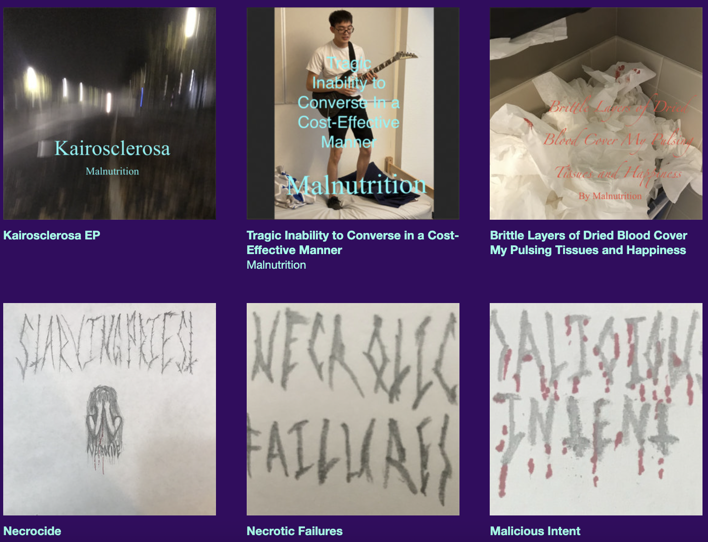

Click Me!
Youtube
Click Me!
BandCamp
Necrocide By Rotting Priest
Black Thrashing Death Metal. Name change to Rotting priest
Brittle Layers of Dried Blood Cover My Pulsing Tissues and Happiness by Malnutrition
Harsh Noise, created with violin, guitar, vacuum cleaner, drum practice pads, Logic Pro Pedalboard
Tragic Inability to Converse in a Cost-Effective Manner by Malnutrition
Dark electronic, Witchhouse, trap metal, noise project. Only on Bandcamp
Petrichor Wounds by Malnutrition
Inspired by The Stalker (1979) by Andrei Tarkovsky. Combination Improvised parts and compositions. I have been trying to learn chord progressions. In this album I tried to use secondary dominants, tritone subs and other techniques I have found. This ambient album is also inspired by the ambient projects of Burzum, Mortiis, Les Legions Noires, Seirom, Gnaw Their Tongues, Ildjarn, MuslimGauze, Sigur Ros, and Depressive Silence.